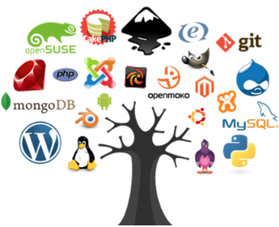
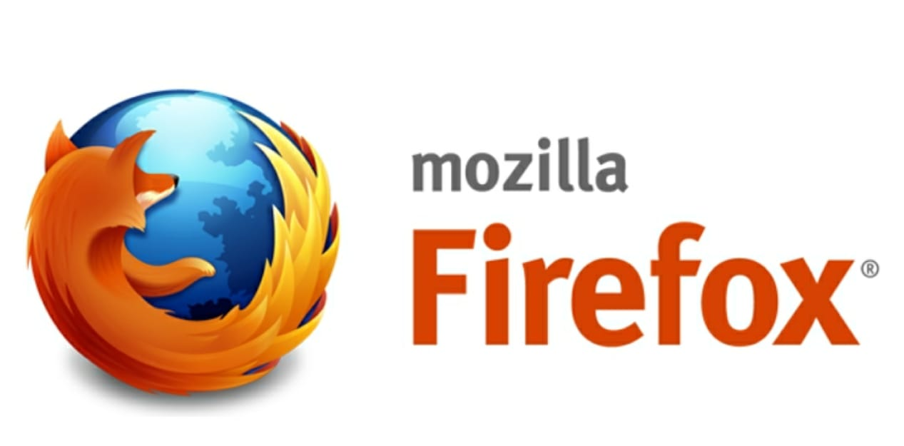
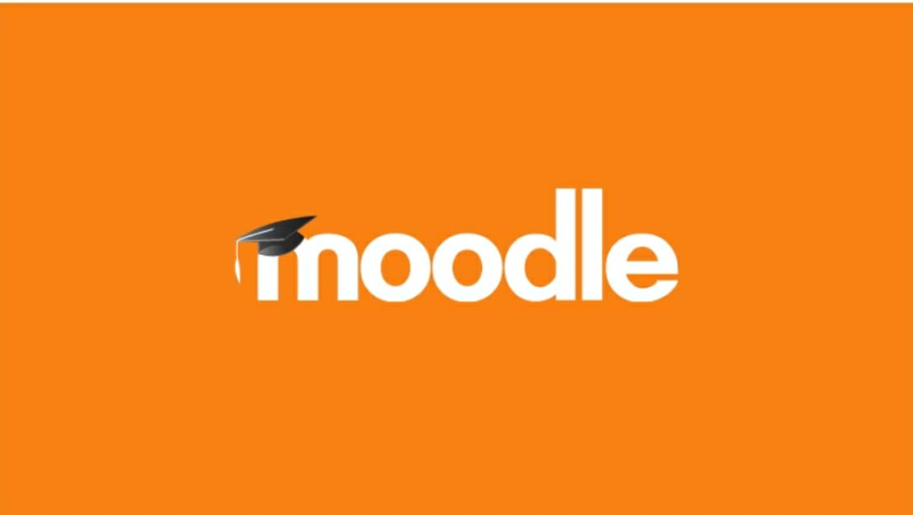
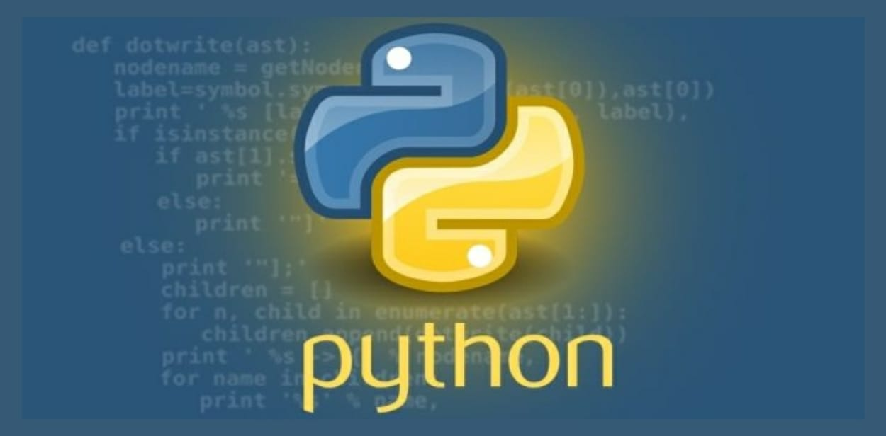
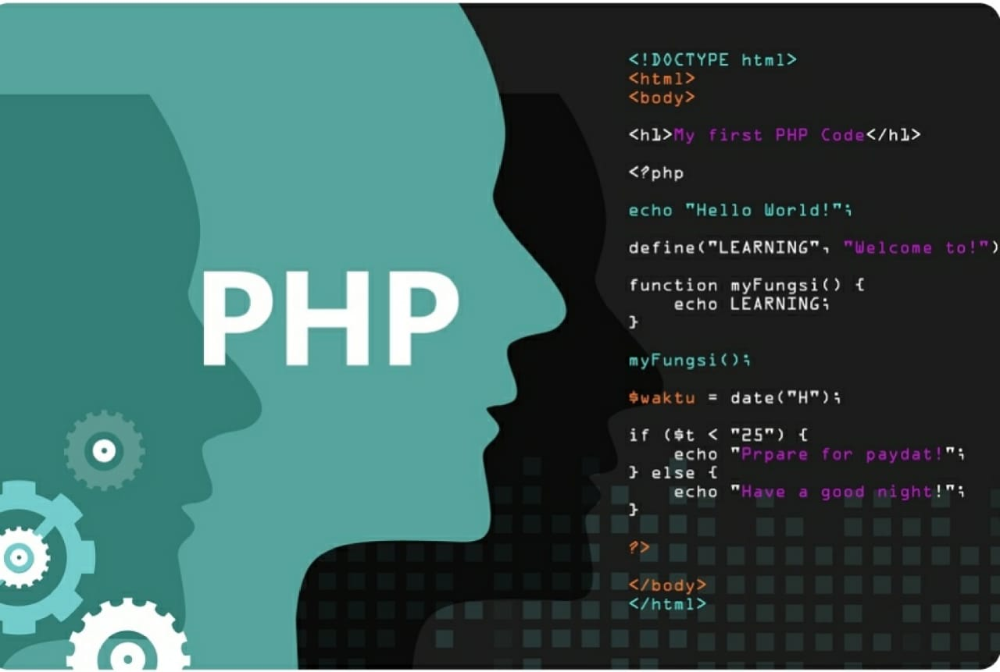
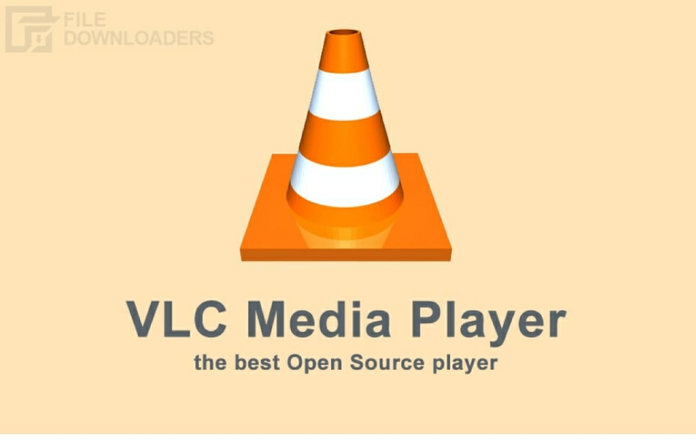
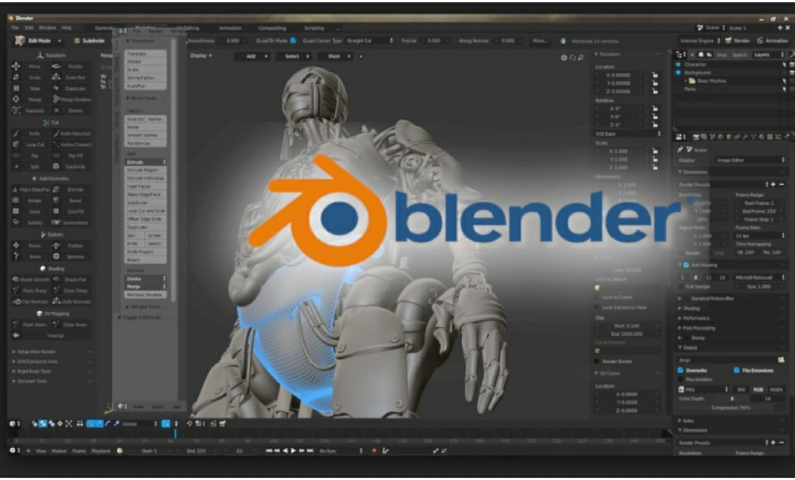
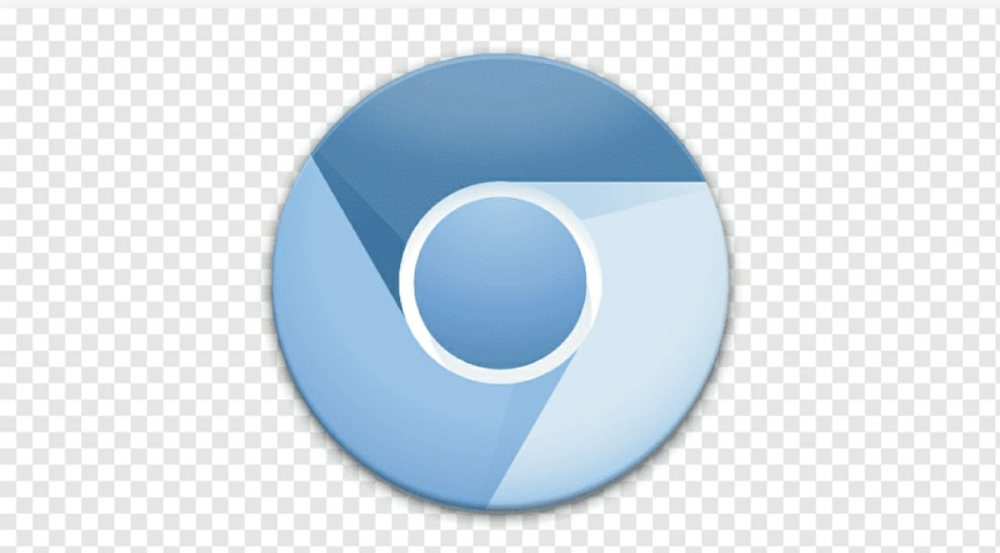

<!DOCTYPE html>
<html lang="en">
<head>
    <meta charset="UTF-8">
    <meta http-equiv="X-UA-Compatible" content="IE=edge">
    <meta name="viewport" content="width=device-width, initial-scale=1.0">
    <title>OPEN SOURCE </title>
    <link rel="stylesheet" href="web.css">
</head>
<body>
    <!-- navigation -->
    <div class="wrapper">
        <h1>info <span>graph</span></h1>
        <div class="nav-items">
            <ul>
                <li><a href="#banner">HOME</a></li>
                <li><a href="#about">ABOUT</a></li>
                <li><a href="#what-is-open-source">OPEN VS FREE</a></li>
                <li><a href="#pages">SOFTWARES</a></li>
            </ul>
        </div>
    </div>
    <!-- banner-section -->
    
    <div id="banner" class="banner-wrapper sections">
       <div class="section-one">
           <div class="text">
            <br><br><br><br><br><br><br><br><br><br><br>
           <i> <h1><strong>Lets Know About </strong></h1><br>
            <h1><strong>OPEN SOURCE SOFTWARES</strong></h1></i><br>
            <a href="#what-is-open-source">know more</a>
           </div>
           <div class="image">
                <br><br><br><br><br><br><br>
               
           </div>
       </div>
       
    </div>
    <!-- main-page -->

    <div  class="body-wrapper">
        <div class="container">
            <div id="about"class="video">
              <center><br><br>
                
    <video width="900" height="500" controls>
        <source src="open source.mp4" type="video/mp4">
        </video>
    </center>
</div> 
<div id="what-is-open-source">

            <div  class="content">
                <br><br>
                <h1>Open Source Software</h1>
                <br>
                <p><h2>Open-source software is a program that has publicly available code which 
                anyone with technical expertise can use, modify and distribute.The term 
                open source was introduced in the late 1990s by The open Source 
                Initiative (OSI).It is typically very easy to obtain and incorporate into digital 
                solutions.Now, it is important to remember that just because open source 
                software is free to use, it doesn't mean that just anyone can use it. Opensource software refers to lines of code (and its variations) that are 
                available.</h2></p><br>
            
                <h1>Open Source Software Vs Free Source Software</h1><br>
                <h2>Very often free source software is used as a synonym with open 
                    source software. <br>
                    Though similar, these two are different types of software. Both of  
                    them offer similar licenses but share different ideologies. <br>
                    Richard Stallman introduced the concept of free source software 
                    back in the 1980s. Its main goal was that all user have the right to 
                    operate, copy, share, study, change and improve this software. <br>
                    Open source software , on the other hand, was introduced in the late 
                    1990s by a group of individuals as a reaction to the limitations of free 
                    source software. <br>
                    The main difference they presented was that they changed the 
                    emphasis from freedom to security. And, they also brought other 
                    pragmatic benefits like transparency and cost savings.</h2>
            </div>
</div>
                <div id="pages" class="examples">
                <h1>Top 10 open source software Examples</h1><br><br><br>

                <table border="0" cellspacing="2"  cellpadding="6">
<tr>
<td colspan="4"><h2>Mozilla Firefox</h2></td>
<td colspan="3"><pre>                   </pre></td>
<td>
    <td colspan="3"><pre><h3>
                        Mozilla Firefox is a customizable internet browser and a free open source 
                        software. It offers thousands of plugins that are accessible with a single 
                        click of your mouse.The platform holds 3.98% of the worldwide browser 
                        market share and it is available for Android, iOS, Windows and Linux</h3></pre></td>
</tr>
<tr>
<td colspan="4"><h2>Libre Office</h2></td>
<td colspan="3"><pre>                </pre></td>
<td>
    <td colspan="3"><pre><h3>
                      LibreOffice is a complete office suite that offers presentations, documents, 
                      spreadsheets and databases.Unlike Microsoft Office, which is not 
                      accessible for everyone due to its pricing model, LibreOffice is totally 
                      free.To support it, its users can make donations when they download. So, it
                      has a huge community of contributors.It is available for Mac, Linux and 
                      Windows and it also has a live chat and a forum where you can turn to 
                      when searching </h3></pre></td>
</tr>
<tr>
<td colspan="4"><h2>Moodle</h2></td>
<td colspan="3"><pre>            </pre></td>
<td>
    <td colspan="3"><pre><h3>
                      Moodle is a learning platform or course management system .Moodle 
                      provides a central learning hub to connect elearning tools and simplify the 
                      teaching and learning process. It is the most widely used LMS in the world</h3></p>
                </div> </h3></pre></td>
</tr>
<tr>
<td colspan="4"><h2>Python</h2></td>
<td colspan="3"><pre>            </pre></td>
<td>
    <td colspan="3"><pre><h3>
                      Python is common programming and scripting language used by custom 
                      software developers.According to IEEE, it was the most popular language 
                      in 2019. In recent years, it attracts plenty of new users because of its
                      fastgrowing field of machine learning.It is also easy to use which 
                      is why most of the developers also choose this open source software</h3></p>
</pre></td>
</tr>
<tr>
<td colspan="4"><h2>PHP</h2></td>
<td colspan="3"><pre>          </pre></td>
<td>
    <td colspan="3"><pre><h3>
                      It is a software development language used for creating websites and 
                      other digital platforms. It is fast and flexible and powers some of the most 
                      popular websites around the globe including Slack and Spotify</h3></p>
</pre></td>
</tr>
<tr>
<td colspan="4"><h2>GIMP</h2></td>
<td colspan="3"><pre>         </pre></td>
<td>
    <td colspan="3"><pre><h3>
                      Another of the best open software source examples that is worth 
                      mentioning is the photo editing tool GIMP.It offers similar features like 
                      some of the expensive tools on the market including various filters and 
                      effects, and yet it is free.Plenty of illustrators, graphic designers and 
                      photographers use it to improve their pictures and enhance their work</h3></p>
</pre></td>
</tr>
<tr>
<td colspan="4"><h2>VLC Media player</h2></td>
<td colspan="3"><pre>             </pre></td>
<td>
    <td colspan="3"><pre><h3>
                      VLC Media Player is one of the most popular open source software 
                     examples that you can use for free.This multimedia player is used for 
                     video, media and audio files and it plays discs, webcams, streams and 
                     devices. Most of the users use it for streaming podcasts as well.What’s 
                     more, it runs on different platforms such as Android, Mac OS X, Linux, 
                     Windows, iOS and more</h3></p>
</pre></td>
</tr>
<tr>
<td colspan="4"><h2>Blender</h2></td>
<td colspan="3"><pre>        </pre></td>
<td>
    <td colspan="3"><pre><h3>
                      Blender is another of the best open source software examples of 2021.It is 
                      a 3D graphics and animation tool that supports motion tracking, simulation,
                      animation, video editing, rendering, modeling and much more.</h3></p>
</pre></td>
</tr>
<tr>
<td colspan="4"><h2>Chromium</h2></td>
<td colspan="3"><pre>          </pre></td>
<td>
    <td colspan="3"><pre><h3>
                     chromium is an open source browser project that aims to build a 
                     safer,faster and more stable way for all internet users to experience the 
                     web. This site contains design documents , architecture overviews, testing 
                     information, and more to help you learn to build and work with chromium 
                     source code.</h3></p>
</pre></td>
</tr>
</table>
</div>
<footer>
    
 <div class="cct">
 <div class="ftr">
 <h3>About</h3>
 <ul class="cnt"> 
  <li><a href="#">Careers</a></li>
<li><a href="#">Team</a></li>
<li><a href="#">Work</a></li>
</ul>
            </div>
            <div class="ftr">
                <h3>Contact</h3>
                <ul class="cnt">
                     <li><a href="#">Info@gmail.com</a></li>
                        <li><a href="#">332-22-2234</a></li>
                </ul
            </div>
             <div class="ftr">
                <h3>Social</h3>
                <ul class="cnt">
                     <li><a href="#">Facebook</a></li>
                        <li><a href="#">Twitter</a></li>
                        <li><a href="#">Instagram</a></li>
                </ul
            </div>
             <div class="ftr">
                <h3>Join Our Newsletter</h3>
                <form action="#">
                    <input type="email" placeholder="Enter Your Email">
                    <div class="btn">
                        <input type="submit" value="subscribe">
                </form>
            </div>


        </div>
    </footer>
    
</body>
</html>
